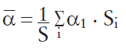

Nachhallzeit und Schallabsorptionsgrad
(1) Die Schallabsorption eines Raums kann mit Hilfe des räumlich gemittelten Schallabsorptionsgrades α beschrieben werden. Wenn das Verhältnis von größter zu kleinster Raumabmessung 3:1 nicht überschreitet, kann α über eine Messung der Nachhallzeit T ermittelt werden.
(2) Die Nachhallzeit eines Raums lässt sich durch die Messung des Pegel-Zeit-Verlaufs nach Impulsanregung oder mit der Methode des abgeschalteten Rauschens bestimmen.
(3) Als Nachhallzeit T für die betrachtete Frequenz wird diejenige Zeit bezeichnet, in welcher der Schalldruckpegel um 60 dB abnimmt. Die Nachhallzeit ist abhängig vom Raumvolumen und insbesondere vom Schallabsorptionsvermögen des Raums. So ergibt sich die Nachhallzeit T zu
T ≈ 0,163 · V / A
mit
| T | – | Nachhallzeit in s für die betrachtete Frequenz |
| V | – | Raumvolumen in m3 |
| A | – | äquivalente Absorptionsfläche für die betrachtete Frequenz in m2 |
(4) Aus der Nachhallzeit T lässt sich die äquivalente Schallabsorptionsfläche A in m2 berechnen. Da A von der Oberfläche des Raums und seinen Absorptionseigenschaften abhängt, kann daraus der räumlich gemittelte Schallabsorptionsgrad ermittelt werden:
A = Σ αi · Si = α · S
mit
| A | – | äquivalente Schallabsorptionsfläche in m2 |
| Si | – | Einzelflächen in m2 |
| αi | – | Schallabsorptionsgrade der Einzelflächen |
| S | = | ΣSi - Gesamtoberfläche des Raumes in m2 |
(5) Der räumlich gemittelte Schallabsorptionsgrad α lässt sich für jede gemessene Frequenz durch Kombination beider Gleichungen direkt aus der jeweiligen Nachhallzeit berechnen:
α ≈ 0,163 · V/(S · T)
mit
| α | – | räumlich gemittelter Schallabsorptionsgrad für betrachtete Frequenz |
| V | – | Raumvolumen in m3 |
| S | = | ΣSi - Gesamtoberfläche des Raumes in m2 |
| T | – | Nachhallzeit in s für die betrachtete Frequenz |
(6) Alternativ kann der räumlich gemittelte Schallabsorptionsgrad α des Raums auch über die Kenntnis der Absorptionsgrade α der sechs Raumbegrenzungsflächen abgeschätzt werden. Dazu müssen die Schallabsorptionsgrade der vorhandenen Einzelflächen bekannt sein bzw. vorgegeben werden. Die Schallabsorptionsgrade α der wichtigsten Baustoffe sind in der Tabelle 1 aufgeführt. Die Absorptionsgrade in der Tabelle 1 sind über die Oktaven 500 bis 4 000 Hz arithmetisch gemittelt und gerundet.
Tab. 1 Schallabsorptionsgrade α von Baumaterialien
| Baumaterial – schallhart | α | Baumaterial – schallabsorbierend | α |
| Kacheln | 0,02 | Hochlochziegel mit Mineralwolle hinterlegt | 0,77 |
| Trapezblech | 0,02 | Trapezblech mit Mineralwolle hinterlegt | 0,82 |
| Fensterglas | 0,02 | PVC-Folienabsorber (abspritzbar) | 0,78 |
| Beton | 0,03 | Weichschaumabsorber 50 mm direkt aufgelegt | 0,95 |
| Verputzte Flächen | 0,04 | Mineralfaser-Zylinderdecke mit 1 Zyl. pro m² | 0,83 |
| Kalksandstein | 0,04 | Mineralfaser-Kulissendecke | 0,91 |
| Ziegelwand (unverputzt) | 0,12 | Mineralfaser-Matten 50 mm | 0,99 |
| Gasbeton | 0,17 |
(7) Der mittlere Schallabsorptionsgrad α lässt sich dann nach der Formel

berechnen.
(8) Näherungsweise kann für bestehende Räume der mittlere Absorptionsgrad α nach der Tabelle 2 abgeschätzt werden.
Tab. 2 Abschätzung des mittleren Schallabsorptionsgrades
| α | Beschreibung des Raums |
| 0,1 | Raum ohne schallschluckende Einbauten mit wenigen Einrichtungen (Streukörpern) |
| 0,15 | Raum ohne schallschluckende Einbauten mit hoher Streukörperdichte |
| 0,2 | Raum ohne schallschluckende Einbauten mit hoher Streukörperdichte und besonders leichten Begrenzungsflächen (Aluminium-Trapez) oder zahlreichen Öffnungen oder hoher Raum (h ≥ 10 m) mit mäßiger Akustikdecke (a ≥ 0,5) |
| 0,25 | Hoher Raum (h ≥ 10 m) mit guter Akustikdecke (a ≥ 0,9) oder niedriger Raum (h = 3 bis 5 m) mit mäßiger Akustikdecke (a ≥ 0,5) |
| 0,3 | Flachhalle (h = 5 bis 10 m) mit mäßiger Akustikdecke (a ≥ 0,5) oder Raum wie für a = 0,25 beschrieben, jedoch mit zusätzlicher absorbierender Wand- oder Stellwandfläche F ≥ ½ Deckenfläche |
| 0,35 | Flachhalle (h = 5 bis 10 m) mit guter Akustikdecke (a ≥ 0,9) oder mäßiger Akustikdecke (a ≥ 0,5) und zusätzlicher absorbierender Wand- oder Stellwandfläche F ≥ ½ Deckenfläche |
| 0,4 | Niedriger Raum (h = 3 bis 5 m) mit guter Akustikdecke (a ≥ 0,9) oder Flachhalle (h = 5 bis 10 m) mit guter Akustikdecke (a ≥ 0,9) und zusätzlicher absorbierender Wand- und Stellwandfläche F ≥ ½ Deckenfläche |
(9) Der Stand der Technik einer raumakustischen Maßnahme zur Lärmminderung kann als eingehalten gelten, wenn der mittlere Schallabsorptionsgrad α in allen Oktavbändern mit den Mittenfrequenzen von 500 bis 4 000 Hz jeweils mindestens 0,3 beträgt.